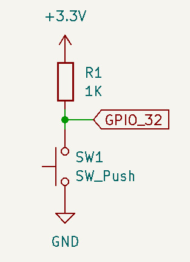
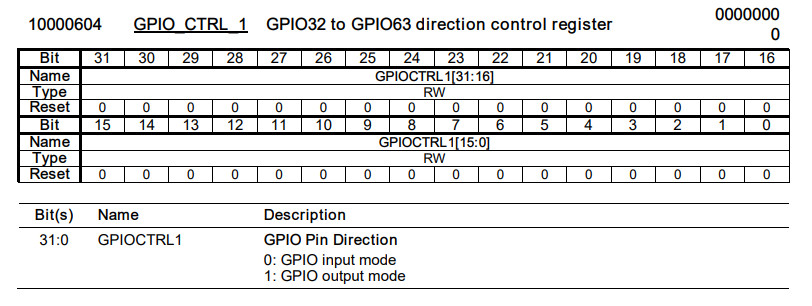
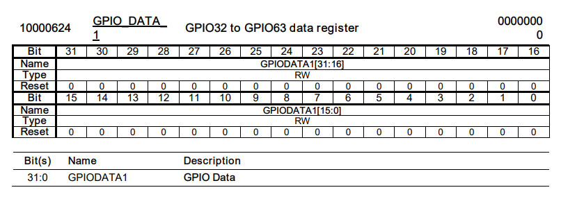
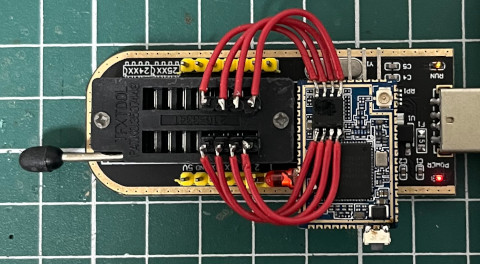
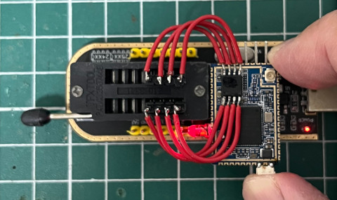

Button是連接到GPIO-32





.extern _start
.set noreorder
.equ GPIO_CTRL_0, 0xb0000600
.equ GPIO_CTRL_1, 0xb0000604
.equ GPIO_DATA_0, 0xb0000620
.equ GPIO_DATA_1, 0xb0000624
.text
_start:
b reset
.org 0x400
reset:
li $8, GPIO_CTRL_0
li $9, (1 << 21)
sw $9, 0($8)
li $8, GPIO_CTRL_1
li $9, 0
sw $9, 0($8)
li $8, GPIO_DATA_0
li $9, GPIO_DATA_1
li $10, (1 << 21)
loop:
lw $7, 0($9)
sll $7, 21
xor $7, $10
sw $7, 0($8)
b loop
nop
完成

